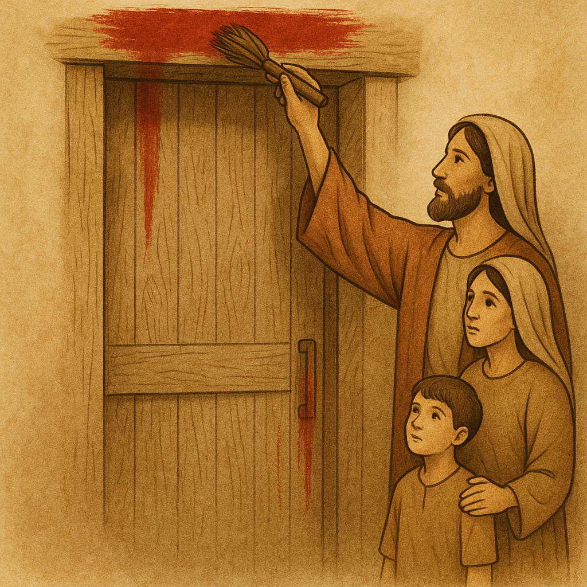
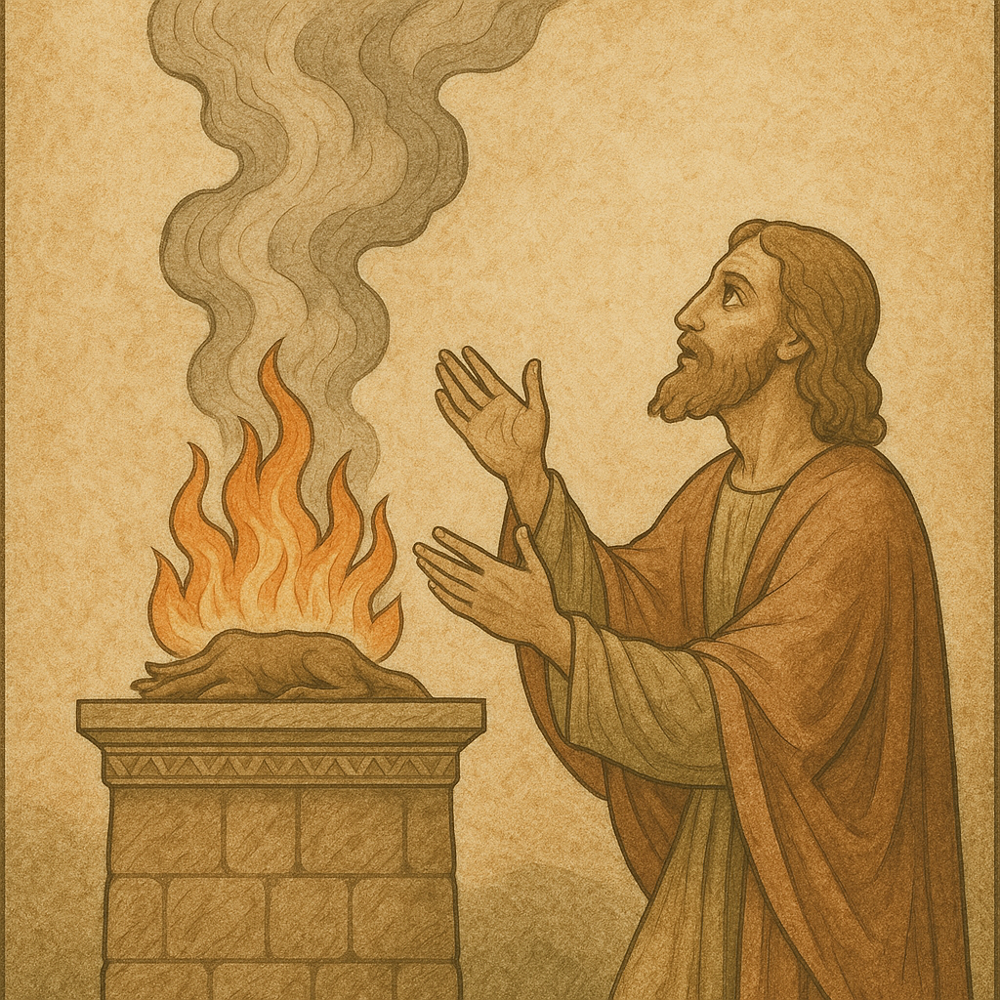

7.11.2 Trois clés bibliques pour comprendre les différentes interprétations
Après la crucifixion, les disciples de Jésus se sont retrouvés face à une question vertigineuse : pourquoi leur maître, celui qu’ils croyaient être le Messie, a-t-il dû mourir de manière aussi brutale et humiliante ?
Pour donner sens à cet événement incompréhensible, ils se sont tournés vers les Écritures qu’ils connaissaient, ainsi que vers les rites qui structuraient leur foi et leur culture.
Dans l’Ancien Testament, plusieurs images semblaient annoncer ou éclairer ce mystère :
- l’agneau pascal de l’Exode, dont le sang avait protégé Israël de la mort ;
- les sacrifices pratiqués au Temple au temps de Jésus et en particulier le sacrifice d’expiation, où le sang répandu symbolisait purification et pardon ;
- enfin, la figure énigmatique du serviteur souffrant d’Ésaïe, qui portait la faute du peuple et s’offrait dans l’obéissance et la douleur.
7.11.2.1 L’agneau pascal dans l’Exode #
Le livre de l’Exode (chapitre 12) raconte l’institution de la première Pâque, lors de la sortie d’Égypte. Dieu ordonne à chaque famille d’Israël de prendre un agneau sans défaut, de l’égorger et d’en appliquer le sang sur les montants et le linteau de la porte de leur maison. Cette nuit-là, l’ange destructeur passa dans le pays d’Égypte et frappa les premiers-nés. Mais là où il voyait le sang, il « passait par-dessus » (c’est le sens du mot Pessah = Pâque), épargnant ainsi les familles protégées.
Cet agneau avait une double signification :
- Un signe de protection : le sang marquait la maison comme appartenant au peuple de Dieu, rappelant que la délivrance venait de Lui seul.
- Un signe de libération : ce repas marquait le départ vers la liberté, la fin de l’esclavage en Égypte. L’agneau, mangé en hâte avec des herbes amères et du pain sans levain, symbolisait l’urgence du départ et l’entrée dans une nouvelle alliance.

Ainsi, l’agneau pascal représentait à la fois la vie épargnée et la libération reçue. Chaque année, les Juifs devaient répéter ce repas pour se souvenir de cette délivrance fondatrice.
Après la crucifixion, les disciples de Jésus ont cherché à comprendre pourquoi leur maître, qu’ils reconnaissaient comme le Messie, avait dû mourir de manière aussi brutale. Pour donner sens à cet événement, ils se sont tournés vers les Écritures et ont vu dans l’agneau pascal une clé d’interprétation :
« Car notre Pâque, le Christ, a été immolé » (1 Corinthiens 5:7).
De même que le sang de l’agneau pascal a protégé les Israélites et ouvert la voie à leur libération, la mort du Christ est vue comme une délivrance définitive du péché et de l’esclavage spirituel.
Plusieurs passages confirment ce lien :
-
L’expression vient de Jean-Baptiste, qui voyant Jésus arriver, déclare :
Jean 1:29 : « Voici l’Agneau de Dieu, qui enlève le péché du monde. »
Jean 1:36 : « Ayant regardé Jésus qui passait, il dit : Voici l’Agneau de Dieu. » -
Jean souligne que, comme pour l’agneau pascal, aucun os de Jésus n’a été brisé :
Exode 12:46: « On le mangera dans la même maison; vous n’emporterez rien de la chair hors de la maison, et vous n’en briserez aucun os. »
Jean 19:36: « Ces choses sont arrivées afin que l’Écriture fût accomplie : Aucun de ses os ne sera brisé. » -
Pierre reprend ici le langage de l’Exode : de même que l’agneau pascal devait être « sans défaut », le Christ est présenté comme l’agneau parfait dont le sang précieux assure la délivrance définitive :
1 Pierre 1:18-19: « Vous avez été rachetés […] par le sang précieux de Christ, comme d’un agneau sans défaut et sans tache ».
Exode 12:5 (l’agneau pascal): « Ce sera un agneau sans défaut, mâle, âgé d’un an; vous pourrez prendre un agneau ou un chevreau. » -
L’Apocalypse présente le Christ ressuscité comme l’Agneau immolé qui a racheté l’humanité :
Apocalypse 5:6, 9: « Je vis au milieu du trône […] un Agneau qui était comme immolé […] car tu as été immolé, et tu as racheté pour Dieu, par ton sang, des hommes de toute tribu, langue, peuple et nation ».
👉 Ainsi, de même que ceux qui avaient obéi à l’ordre de Dieu en marquant leur maison du sang de l’agneau furent épargnés, de même ceux qui mettent leur confiance dans le Christ reçoivent la vie et la liberté promises par Dieu.
⚠️ Note que Jésus ne s’est jamais identifié lui-même comme « l’Agneau de Dieu », du moins dans les paroles qui nous sont rapportées dans le Nouveau Testament. Cette appellation apparaît dans la bouche de Jean-Baptiste (Jean 1:29, 36) et sera ensuite reprise par les apôtres et la tradition chrétienne pour interpréter la mort du Christ à la lumière de l’agneau pascal et des Écritures.
7.11.2.2 Les types de sacrifice et le pardon des péchés au temps de Jésus #
Comme le rappelle Frère Benoît1, on distingue au moins trois types de sacrifices dans la tradition d’Israël. Ces pratiques, loin d’être de simples rites mécaniques, portaient chacune une signification spirituelle forte.
-
Le sacrifice d’oblation : le don total à Dieu
- L’holocauste (‘olah) consistait à brûler entièrement la victime sur l’autel (cf. Lévitique 1). Rien n’était conservé pour l’offrant ou pour les prêtres : tout montait en fumée vers Dieu.
- Il s’agissait d’un geste gratuit, sans attente de retour, pour reconnaître que tout vient de Dieu et retourne à lui.
- Ce qui importait n’était pas la valeur matérielle de l’offrande, mais l’attitude intérieure : se déposséder pour honorer Dieu.
Deutéronome 16:17: « Chacun donnera ce qu’il pourra, selon la bénédiction que l’Éternel, ton Dieu, t’aura accordée. »
- Spirituellement, ce sacrifice exprimait un abandon total à Dieu : comme si l’homme se vidait de lui-même pour faire place à la présence divine.
- Plus tard, les prophètes interpréteront ce sacrifice comme un symbole de la vie offerte en entier à Dieu (cf. Romains 12:1, où Paul parle d’« offrir vos corps comme un sacrifice vivant »).

-
Le sacrifice d’expiation et Yom Kippour: la purification des fautes
La loi lévitique prévoyait des sacrifices spécifiques pour les fautes involontaires.
Lévitique 4:27-31: « Si c’est un particulier qui a péché en faisant involontairement contre un des commandements de l’Éternel, des choses qui ne doivent pas se faire, et qui se rend ainsi coupable, s’il apprend le péché qu’il a commis, il amènera pour son offrande une chèvre sans défaut, femelle, en sacrifice d’expiation. Il posera sa main sur la tête de la victime expiatoire, et l’égorgera dans le lieu des holocaustes. (…) Ainsi le sacrificateur fera pour cet homme l’expiation, et il lui sera pardonné. »
- Dans ce rituel, l’animal était identifié symboliquement au coupable : en mourant, il représentait l’effacement de la faute.
- Le sang jouait un rôle purificateur, signe de vie offerte à Dieu. Il était appliqué sur l’autel et le reste de l’animal brûlé, symbolisant purification et rétablissement de la relation avec Dieu.
⚠️ Mais cette pratique avait une limite importante :
Nombres 15:30-31: « Mais l’homme qui pèche volontairement, qu’il soit indigène ou étranger, il outrage l’Éternel; celui-là sera retranché du milieu de son peuple. Il a méprisé la parole de l’Éternel, et il a violé son commandement; celui-là sera retranché, il portera la peine de son iniquité. »
Le sacrifice ne couvrait donc que les fautes commises par ignorance ou involontairement.
Les péchés volontaires, conscients et obstinés pouvaient être pardonnées autrement:
-
la repentance (téshouvah) et la prière sincère (e.g. Psaume 51)
-
le jour des expiations (Yom Kippur2, Lv 16): le grand prêtre offrait un sacrifice collectif, qui couvrait toutes les fautes du peuple, mais la tradition juive a toujours insisté sur la nécessité d’un repentir personnel. Voir détails ci-dessous.
Lv 16,30 : « Car en ce jour on fera l’expiation pour vous, afin de vous purifier ; vous serez purifiés de tous vos péchés devant l’Éternel. »
Yom Kippour, le Jour des Expiations, est resté jusqu’à aujourd’hui la fête la plus solennelle du calendrier juif. Son sens profond, déjà présent au temps de Jésus, continue d’éclairer la compréhension du pardon et de la repentance.
-
Le rite au temps de Jésus : À l’époque du Second Temple, une seule fois par année, le grand prêtre, après de longs rituels de purification, entrait dans le Saint des Saints — lieu où reposait l’arche de l’alliance — pour offrir le sang d’un taureau (pour ses propres fautes) et d’un bouc (pour les fautes du peuple). Un second bouc, appelé « bouc émissaire », recevait symboliquement les péchés de la communauté et était conduit au désert pour les emporter au loin. Ce rituel marquait la purification annuelle du peuple et du sanctuaire.
-
La signification du rite : Ces gestes rappelaient que le péché brise la relation entre l’homme et Dieu et souille symboliquement le sanctuaire. Le sang du sacrifice n’était pas une « monnaie d’échange » que Dieu exigerait, mais un signe concret de purification et de renouvellement d’alliance. Le bouc envoyé au désert représentait la séparation radicale entre le peuple et son péché, comme si celui-ci était éloigné à jamais.
-
Le besoin de repentance : Déjà à l’époque, on soulignait que le rite seul ne suffisait pas. Les prophètes rappelaient que Dieu désirait avant tout un cœur sincère : « Revenez à moi de tout votre cœur » (Joël 2:12). La Mishna (Yoma 8:9) précise que Yom Kippour expie uniquement les fautes envers Dieu, mais pas celles envers autrui : pour cela, il fallait d’abord se réconcilier avec la personne offensée. Ainsi, le pardon dépendait surtout de la repentance, de la confession des fautes et de la volonté de réparation.
-
La pratique juive aujourd’hui : Depuis la destruction du Temple en 70 ap. J.-C., il n’y a plus de sacrifices d’animaux. Yom Kippour est désormais célébré par un jeûne complet de 25 heures, sans nourriture ni boisson, et par de longues prières collectives à la synagogue. Les fidèles récitent des confessions de péchés (vidouï), demandent pardon à Dieu et cherchent à régler les conflits avec leur prochain. C’est un jour de solennité et de recueillement, marqué par l’introspection et la contrition.
-
Le cœur de la fête : Que ce soit dans l’Antiquité ou aujourd’hui, l’essence de Yom Kippour est la même : reconnaître sa faute, se détourner du mal, demander pardon et renouveler l’alliance avec Dieu. Les sacrifices ont disparu, mais l’esprit du jour demeure intact. Ce n’est pas le rituel qui sauve, mais la sincérité de la conversion et la miséricorde de Dieu qui pardonne.
👉 En définitive, Yom Kippour rappelle que le pardon ne dépend pas d’un rite magique ou mécanique, mais d’un cœur qui se tourne sincèrement vers Dieu et vers son prochain.
-
Le sacrifice de communion : l’alliance et la paix
-
Appelé aussi sacrifice de paix (cf. Lévitique 3), il était fréquent lors des fêtes et des célébrations communautaires.
-
L’animal était partagé : une partie brûlée pour Dieu, une partie donnée aux prêtres, et une partie mangée par l’offrant et sa famille dans un repas sacré.
-
Ce repas symbolisait la communion avec Dieu et avec son peuple.
-
Ce sacrifice ne visait pas l’expiation d’une faute, mais l’entretien d’une relation d’amitié, de gratitude et de fidélité envers Dieu.
-
Il rappelait que la vie est un don de Dieu et doit être vécue dans l’alliance avec lui.
-
Le pardon au-delà des sacrifices #
Depuis les prophètes jusqu’à Jésus, la Bible montre que le pardon de Dieu ne dépend pas d’un rituel mécanique ou de sacrifices matériels. Ce qui importe, c’est un cœur sincère, la repentance et la confiance en Dieu. Les textes suivants illustrent cette continuité :
-
Les prophètes dénoncent la tentation de réduire le culte à des sacrifices matériels. Pour eux, ce qui compte, c’est la sincérité du cœur et la justice vécue au quotidien.
Michée 6:6-8: « Avec quoi me présenterai-je devant l’Éternel, pour m’incliner devant le Dieu d’en haut ? (…) On t’a fait connaître, ô homme, ce qui est bien; et ce que l’Éternel demande de toi, c’est que tu pratiques la justice, que tu aimes la miséricorde, et que tu marches humblement avec ton Dieu. »
Psaume 51:18-19: « Tu ne prends point plaisir aux sacrifices, autrement j’en donnerais; tu n’agrées point d’holocauste. Les sacrifices qui sont agréables à Dieu, c’est un esprit brisé: Ô Dieu! tu ne dédaignes pas un cœur brisé et contrit. »
-
Le pardon sans sacrifice : la repentance et la prière
De nombreux textes affirment que Dieu pardonne directement à celui qui se repent, même en dehors de tout rituel sacrificiel :
2 Chroniques 7:14: « Si mon peuple sur qui est invoqué mon nom s’humilie, prie, et cherche ma face, et s’il se détourne de ses mauvaises voies, je l’exaucerai des cieux, je lui pardonnerai son péché, et je guérirai son pays. »
Ésaïe 55:7: « Que le méchant abandonne sa voie, et l’homme d’iniquité ses pensées; qu’il retourne à l’Éternel, qui aura pitié de lui, à notre Dieu, qui ne se lasse pas de pardonner. »
Psaume 32:5: « Je t’ai fait connaître mon péché, je n’ai pas caché mon iniquité; j’ai dit: J’avouerai mes transgressions à l’Éternel! Et tu as effacé la peine de mon péché. »
-
Jésus et le pardon direct des péchés
Dans ce contexte, Jésus s’inscrit clairement dans la lignée des prophètes : il pardonne les péchés directement, sans passer par le Temple ni par un sacrifice animal. Ce geste audacieux manifeste son autorité divine et recentre le pardon sur la relation personnelle avec Dieu.
Marc 2:5-7: « Jésus, voyant leur foi, dit au paralytique : Mon enfant, tes péchés sont pardonnés. Il y avait là quelques scribes, qui étaient assis, et qui se disaient au dedans d’eux: Comment cet homme parle-t-il ainsi? Il blasphème. Qui peut pardonner les péchés, si ce n’est Dieu seul? »
Luc 7:47-48: « C’est pourquoi je te le dis: ses nombreux péchés ont été pardonnés: car elle a beaucoup aimé. Mais celui à qui on pardonne peu aime peu. Et il dit à la femme: Tes péchés sont pardonnés. »
Jean 8:10-11: « Alors Jésus, s’étant relevé, et ne voyant plus que la femme, lui dit: Femme, où sont ceux qui t’accusaient? Personne ne t’a-t-il condamnée? Elle répondit: Non, Seigneur. Et Jésus lui dit: Je ne te condamne pas non plus: va, et ne pèche plus. »
Luc 18:13-14: « Le publicain, se tenant à distance, n’osait même pas lever les yeux au ciel; mais il se frappait la poitrine, en disant: Ô Dieu, sois apaisé envers moi, pécheur! Je vous le dis, celui-ci descendit dans sa maison justifié, plutôt que l’autre. Car quiconque s’élève sera abaissé, et celui qui s’abaisse sera élevé. »
En résumé #
- Le sacrifice d’holocauste (ou d’oblation) exprimait le don total de soi à Dieu.
- Le sacrifice d’expiation était destiné aux fautes commises par ignorance ou par inadvertance ; les fautes conscientes et volontaires exigeaient la repentance et le retour du cœur vers Dieu.
- Le sacrifice de communion célébrait l’alliance et l’amitié avec Dieu, souvent sous forme de repas partagé en présence divine.
- Une fois par an, lors du Jour des expiations (Yom Kippour, Lv 16), le grand prêtre offrait un rituel unique pour purifier le peuple dans son ensemble, couvrant toutes les fautes, à condition que chacun s’engage dans la repentance.
- Les prophètes rappelaient sans cesse que Dieu désire avant tout un cœur sincère et obéissant, plutôt que des rituels accomplis machinalement.
- Le pardon pouvait être accordé directement par Dieu à celui qui se repent avec sincérité, comme en témoignent plusieurs psaumes.
- Jésus, en exerçant son autorité divine, a pardonné les péchés sans passer par un sacrifice rituel, annonçant déjà une nouvelle manière de vivre la relation avec Dieu.
7.11.2.3 Le Serviteur souffrant (Isaïe 52–53) #
Ce passage d’Isaïe est l’un des plus débattus de toute la Bible. Qui est ce mystérieux « serviteur » ? Les interprétations divergent : certains y voient Israël, le peuple élu, d’autres une figure messianique accomplie en Jésus-Christ3. Pour mieux comprendre ces lectures, il faut d’abord replacer le texte dans son contexte historique.
- Contexte historique
Après l’Exode d’Égypte (XIIIᵉ siècle av. J.-C., selon la tradition), le peuple d’Israël entre en Terre promise sous la conduite de Josué. Israël s’installe en Judée, où se forment progressivement les royaumes d’Israël (au nord) et de Juda (au sud). Jérusalem devient la capitale politique et spirituelle, et le Temple de Salomon le centre du culte.
Mais au fil des siècles, le peuple s’éloigne de l’alliance conclue avec Dieu. Les prophètes dénoncent l’idolâtrie, l’injustice et l’oubli des commandements. Après la chute du royaume d’Israël (722 av. J.-C., conquis par les Assyriens), c’est au tour du royaume de Juda d’être détruit par les Babyloniens : Jérusalem et le Temple sont rasés en 587, et une partie importante de la population est déportée.
Cet épisode dramatique est appelé l’Exil à Babylone. Il provoque une profonde crise spirituelle : si la ville sainte et le Temple sont détruits, que reste-t-il de la présence de Dieu au milieu de son peuple ? Dieu a-t-il abandonné Israël ?
C’est dans ce contexte que s’inscrit le « Deuxième Ésaïe » (chapitres 40–55). Le prophète annonce une espérance nouvelle : Dieu n’a pas abandonné son peuple. Comme lors de l’Exode d’Égypte, il prépare un retour, une libération, un « nouvel Exode » qui fera sortir Israël de Babylone.
Au cœur de cette annonce apparaît une figure mystérieuse, le Serviteur de l’Éternel. Sa mission est universelle : apporter justice et salut non seulement à Israël, mais aussi aux nations. Mais loin d’être reconnu, ce Serviteur est méprisé, rejeté et persécuté. Paradoxalement, c’est précisément sa souffrance qui devient porteuse de salut pour d’autres.
- Interprétations comparées
À partir de ce portrait ambigu, deux grandes lectures se sont imposées au fil du temps. Le tableau ci-dessous met en parallèle l’interprétation juive, qui identifie le serviteur à Israël, et l’interprétation chrétienne, qui y voit une annonce de Jésus-Christ.
| Texte d’Isaïe 52–53 | Interprétation juive (serviteur = Israël) | Interprétation chrétienne (serviteur = Jésus) |
|---|---|---|
| Isaïe 52:13 – « Voici, mon serviteur prospérera; il montera, il s’élèvera, il s’élèvera bien haut. » | Israël, humilié par l’exil, sera relevé et restauré par Dieu, reconnu par les nations. | Jésus est compris comme le serviteur exalté après son abaissement, élevé par Dieu dans la gloire. |
| Isaïe 52:14 – « De même qu’il a été pour plusieurs un objet d’effroi, tant son visage était défiguré, tant son aspect différait de celui des fils de l’homme… » | Israël, marqué par la souffrance et les persécutions, apparaît méconnaissable aux yeux des nations. | Jésus est vu comme le serviteur défiguré lors de sa Passion, objet de rejet et de mépris. |
| Isaïe 52:15 – « De même il purifiera beaucoup de nations; des rois fermeront la bouche devant lui, car ils verront ce qui ne leur avait point été raconté, ils apprendront ce qu’ils n’avaient point entendu. » | Par ses épreuves et son endurance, Israël témoigne de Dieu et les nations finissent par reconnaître son rôle. | Le Christ est compris comme celui dont la mission éclaire les nations et les conduit à reconnaître Dieu. |
| Isaïe 53:1 – « Qui a cru à ce qui nous était annoncé? Qui a reconnu le bras de l’Éternel? » | Peu de nations reconnaissent l’élection et la vocation d’Israël. | Peu ont cru au message de Jésus malgré les signes et l’annonce de Dieu à travers lui. |
| Isaïe 53:2 – « Il s’est élevé devant lui comme une faible plante, comme un rejeton qui sort d’une terre desséchée; il n’avait ni beauté, ni éclat pour attirer nos regards, et son aspect n’avait rien pour nous plaire. » | Israël, peuple insignifiant parmi les nations, choisi non pour sa force mais par grâce. | Jésus, venu humblement, sans prestige extérieur, est perçu comme serviteur sans éclat terrestre. |
| Isaïe 53:3 – « Méprisé et abandonné des hommes, homme de douleur et habitué à la souffrance, semblable à celui dont on détourne le visage, nous l’avons dédaigné, nous n’avons fait de lui aucun cas. » | Israël, souvent méprisé, rejeté et marginalisé au milieu des nations. | Jésus, méprisé et rejeté par beaucoup, identifié comme l’homme de douleur. |
| Isaïe 53:4 – « Cependant, ce sont nos souffrances qu’il a portées, c’est de nos douleurs qu’il s’est chargé; et nous l’avons considéré comme puni, frappé de Dieu, et humilié. » | Israël subit injustement des souffrances qui bénéficient spirituellement aux nations. | Jésus est interprété comme portant les souffrances et la misère des hommes en s’identifiant à eux. |
| Isaïe 53:5 – « Mais il était blessé pour nos péchés, brisé pour nos iniquités; le châtiment qui nous donne la paix est tombé sur lui, et c’est par ses meurtrissures que nous sommes guéris. » | Israël, frappé par l’exil et les persécutions, souffre à cause des fautes collectives du peuple. | Jésus est compris comme celui qui prend sur lui les fautes des autres, apportant la paix par sa souffrance. |
| Isaïe 53:6 – « Nous étions tous errants comme des brebis, chacun suivait sa propre voie; et l’Éternel a fait retomber sur lui l’iniquité de nous tous. » | Israël porte les conséquences de l’égarement du peuple et de l’humanité. | Jésus est interprété comme le serviteur portant le poids de l’égarement des hommes. |
| Isaïe 53:7 – « Il a été maltraité et opprimé, et il n’a point ouvert la bouche, semblable à un agneau qu’on mène à la boucherie, à une brebis muette devant ceux qui la tondent; il n’a point ouvert la bouche. » | Israël endure ses souffrances avec patience et silence, sans révolte. | Jésus, comme serviteur, accepte l’injustice en silence, tel un agneau mené à la mort. |
| Isaïe 53:8 – « Il a été enlevé par l’angoisse et le châtiment; et parmi ceux de sa génération, qui a cru qu’il était retranché de la terre des vivants et frappé pour les péchés de mon peuple? » | Israël, arraché à sa terre par l’exil, a semblé retranché à cause des fautes de la nation. | Jésus est compris comme retranché de la terre des vivants pour les fautes du peuple. |
| Isaïe 53:9 – « On a mis son sépulcre parmi les méchants, son tombeau avec le riche, quoiqu’il n’eût point commis de violence et qu’il n’y eût point de fraude dans sa bouche. » | Israël, injustement accusé et privé de dignité, malgré son innocence. | Jésus est perçu comme mis au rang des criminels bien qu’innocent. |
| Isaïe 53:10 – « Il a plu à l’Éternel de le briser par la souffrance… Après avoir livré sa vie en sacrifice pour le péché, il verra une postérité et prolongera ses jours; et l’œuvre de l’Éternel prospérera entre ses mains. » | Israël, écrasé dans l’exil, connaît une renaissance et devient source de bénédiction pour les générations futures. | Jésus, brisé par la souffrance, est compris comme donnant naissance à une descendance spirituelle. |
| Isaïe 53:11 – « À cause du travail de son âme, il rassasiera ses regards; par sa connaissance mon serviteur juste justifiera beaucoup d’hommes, et il se chargera de leurs iniquités. » | Israël, par sa fidélité et sa persévérance, justifie et éclaire les nations. | Jésus, par son obéissance et sa fidélité, est vu comme celui qui justifie les multitudes. |
| Isaïe 53:12 – « C’est pourquoi je lui donnerai sa part avec les grands; il partagera le butin avec les puissants, parce qu’il s’est livré lui-même à la mort, et qu’il a été mis au nombre des malfaiteurs, parce qu’il a porté les péchés de beaucoup d’hommes, et qu’il a intercédé pour les coupables. » | Israël, persécuté et exilé, finit réhabilité et reconnu, intercédant pour les nations. | Jésus, livré à la mort et compté parmi les malfaiteurs, est compris comme celui qui intercède et porte les fautes des hommes. |
Lien vers vidéos youtube qui explique chaque point de vue:
- Juif: Isaïe 53 – le chapitre interdit – fait-il allusion à Jésus ? Centre Noachide Mondial
- Chrétien: Ésaïe 53 parle-t-il du Messie ou d’Israël ? “En Jésus Seul”
- Sens et relectures
Dans son contexte historique, le « chant du serviteur » d’Isaïe 52–53 se comprend avant tout comme une allégorie du peuple d’Israël. Le texte a été rédigé vers la fin de l’exil à Babylone (VIᵉ siècle av. J.-C.), un moment où Israël vivait une profonde humiliation collective : le Temple avait été détruit, le peuple dispersé, méprisé par les nations. Isaïe lui-même identifie explicitement le « serviteur » à Israël : « Tu es mon serviteur, Israël, en qui je me glorifierai » (Is 49,3). Dans cette perspective, les souffrances décrites en Isaïe 53 représentent les persécutions vécues par le peuple, qui apparaît « méprisé », « rejeté » et « accablé de douleurs », mais que Dieu finira par relever. La conclusion du chant (Is 53,10-12) insiste sur la prospérité finale : Israël, après avoir été écrasé, verra des « jours prolongés » et deviendra lumière pour les nations.
Cependant, il existait déjà avant l’époque de Jésus des attentes messianiques teintées de souffrance. Dans certaines traditions juives anciennes, on trouve la figure d’un Messie ben Joseph (ou ben Éphraïm), destiné à souffrir et à mourir avant l’avènement triomphant du Messie ben David. Les Manuscrits de la mer Morte reflètent eux aussi l’idée d’un chef juste, persécuté, dont la souffrance a une valeur rédemptrice pour la communauté. Autrement dit, même si l’interprétation collective (« serviteur = Israël ») était majoritaire, la possibilité d’une lecture messianique personnelle était déjà présente dans certains milieux juifs.
C’est précisément cette seconde interprétation que les premiers chrétiens ont adoptée. Confrontés à la crucifixion de Jésus – événement scandaleux et incompréhensible pour un Messie attendu comme roi victorieux – ils ont trouvé dans Isaïe 52–53 une clé de lecture. Ce texte est devenu pour eux une prophétie accomplie : Jésus, rejeté et humilié, a pris sur lui les péchés des multitudes et a été exalté par Dieu. Les Évangiles et les apôtres citent directement Isaïe 53 pour éclairer la Passion (Mt 8,17 ; Ac 8,32-35 ; 1 P 2,24-25). Ainsi, ce poème d’Isaïe, compris d’abord comme une métaphore du destin collectif d’Israël, a été relu par les chrétiens comme une annonce de l’œuvre salvifique du Messie.
En résumé : Le « serviteur souffrant » d’Isaïe 52–53 reste l’un des textes bibliques les plus riches et les plus discutés. Son sens premier désigne vraisemblablement Israël en exil, mais il a aussi nourri l’attente d’un Messie souffrant dans certains courants juifs, avant d’être repris par les chrétiens comme une prophétie accomplie en Jésus-Christ. Cette diversité d’interprétations illustre à la fois la profondeur du texte et la manière dont chaque tradition y a trouvé un miroir de sa propre espérance.
7.11.2.4 Conclusion #
Chacune de ces trois images bibliques peut être comprise à deux niveaux : d’abord dans son sens premier, enraciné dans le contexte historique d’Israël ; puis après relecture par les disciples, après la croix, comme une annonce éclairant la mort de Jésus.
1) L’agneau pascal (Ex 12) :
Lecture initiale : signe de protection et de libération données par Dieu lors de l’Exode. Le sang appliqué sur les portes marquait l’appartenance au peuple sauvé et inaugurait la sortie de l’esclavage.
Relecture : pour les premiers chrétiens, la mort et la résurrection de Jésus ont pris sens à la lumière de la Pâque juive. Lui, le « nouvel agneau », inaugure une nouvelle libération — non plus de l’esclavage d’Égypte, mais de l’esclavage du péché et de la mort. La Pâque devient ainsi la figure de la délivrance définitive et de l’entrée dans l’Alliance nouvelle.
2) Les sacrifices du Temple (Lv 1–7 ; 16)
Lecture initiale : rites ordonnés pour réconcilier le peuple avec Dieu. Le sang, symbole de la vie, servait de signe de purification et de pardon. Mais Dieu n’avait pas besoin de sacrifices : ils constituaient surtout une pédagogie pour l’homme, un moyen d’exprimer la repentance et de restaurer la communion avec Dieu (Yom Kippour en était le sommet).
Relecture : la mort de Jésus est interprétée comme accomplissant et dépassant ces rites. Le pardon est don gratuit de Dieu, reçu dans la foi et la conversion du cœur, et non dans la répétition d’un rite. La croix devient le lieu où l’Alliance est renouvelée une fois pour toutes.
3) Le serviteur souffrant (Is 52–53)
Lecture initiale : figure collective d’Israël, humilié par l’exil mais relevé par Dieu. Sa fidélité dans la souffrance devient un témoignage pour les nations et un signe de la présence du Dieu d’Israël.
Relecture : pour certaines traditions anciennes — minoritaires dans le judaïsme — ce passage pouvait annoncer la venue d’un Messie souffrant, incompris et rejeté, mais finalement exalté par Dieu. Les premiers chrétiens y ont reconnu en Jésus l’accomplissement de cette figure : celui qui porte les fautes des hommes, qui souffre à leur place, et qui, par son élévation, devient source de salut et de justification.
Ainsi, ces images, relues à la lumière de la croix, ne fournissent pas une explication technique du mystère, mais elles offrent des clés de compréhension enracinées dans la mémoire d’Israël. Elles ont aidé les premiers chrétiens à exprimer leur conviction que, dans la mort et la résurrection de Jésus, Dieu a scellé une nouvelle alliance, offrant le pardon, la réconciliation et une vie transformée.
Ces lectures sont avant tout des tentatives de réponse à une question bouleversante : « Pourquoi fallait-il que Jésus meure ? »
👉 Le chapitre suivant se tournera vers les paroles de Jésus rapportées par les disciples, pour voir comment il a lui-même annoncé et interprété le sens de sa mort, avant et après la Résurrection.
→ 7.11.3 Ce que Jésus a dit du sens de sa mort